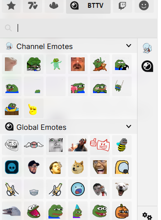

Уже два дня как перестали отображаться смайлики на Twitch от FrankerFacez и BetterTTV
При этом смайлы 7TV отображаются нормально.
При включении VPN все эмоуты отображаются.
Подскажите, пожалуйста, какие адреса нужно добавить в russia-blacklist.txt?
Подтверждаю, аналогичная проблема возникла на днях. Поудалял расширения, чистил куки твича, ставил отдельно BTTV и 7TV вместо FFZ, запускал отдельно в Лисе, запускал через скрипт в обезьянке - нифига. Вместо смайлов либо тупо пустое пространство, либо иногда прогружается текстовое слово и значок сломанной картинки. Странно, что именно BTTV не работает, хотя блокнули же 7TV.
{kind=link}
добавьте cdn.betterttv.net
после этого работает
Спойлер

Хмм, неприятную заметил проблему теперь - на хороших конфигах для Ютуба у меня отваливаются большинство сайтов из блеклиста (твиттер, ntc.party тот же, да и BTTV не сработал), но вот на конфиге, который я сейчас прогнал в гудчеке чисто для небольшого списка разных блокнутых сайтов (+cdn.betterttv.net) у меня уже тупо не работает Ютуб (чисто видеоролики, а сам сайт грузится) 
ты можешь запустить gdpi с 2 стратегиями одновременно и соответственно с 2 блеклистами
Хах, реально. Спасибо! Упустил этот момент по функционалу. Сидеть, конечно, теперь с двумя окошками в фоне (“сервисы” запарнее лично для меня), но зато хоть работает 
Спасибо!
для ffz cdn.frankerfacez.com соответственно
Вствил уже разные строки:
frankerfacez.com
betterttv.net
cdn.frankerfacez.com
cdn.betterttv.net
*.frankerfacez.com
*.betterttv.net
всё равно не работает - ни расширение, ни при обзоре смайликов на сайтах FFZ\BTTV.
т.е. не отображаются смайлы сами.
Использую обычно как сервисы - GDPI и сверху него zapret.
Вставлял в разные списки - и в GDPI, и zapret, и все сразу.
Пытался запустить и просто на GDPI.
Тестировал в двух браузерах - Opera и Firefox.
Перезагружался несколько раз, при разных условиях.
Что ещё можно сделать, что может быть не так?
Один вопрос: зачем? Вам не приходило в голову, что из-за этого может и не работать? К счастью, насколько мне известно, обе программы достаточно умные, чтобы не пытаться по второму кругу исказить уже искаженный трафик. Только это вас и спасает.
Порой читаешь и диву даешься, какие идеи людям в голову приходят…
на первый вопрос - без него не работает дискорд. Также в самом zapret написано, что нужно ставить поверх gdpi.
на второй вопрос ответ в оригинальном сообщении - запускал и отдельно.
Это вы где такую дичь прочитали?
чистый запуск свеже-скачанного GDPI, вместе с добавленым адресом в blacklist.txt, также ничего не изменил
Посмотрел у себя, в автохостлист автоматом добавились 7tv.app, cdn.frankerfacez.com и cdn.betterttv.net Остальное, видимо, не заблокировано. Через курл попробуйте потестить есть ли ответ. В командной строке:
curl -svo NUL -m 2 https://cdn.betterttv.net
curl -svo NUL -m 2 https://7tv.app
curl -svo NUL -m 2 https://cdn.frankerfacez.com
Если нет - ищите рабочии стратегии через блокчек/гудчек или руками.
Потестил ещё. Все 3 сайта за клаудфлейр. Клаудфлейр не отбрасывает wrong-chksum/badsum. Рискну предположить, что проблема в этом - вы используете стратегии с этими ключами без каких-то доп. ограничителей, типа ttl.
о, это уже интересно, спасисбо.
ответа от сайтов нет(failed handshake).
ttl 5 в .bat внутри сервиса стоит, но не то чтобы это мне о чём-то говорило, во всём этом я пользователь.
прогоню как следует через goodcheck, может найдётся стратегия получше.
Добавьте эти 3 сайта в чеклист прежде чем проверять.
Это вы у дурачков с гитхаба такой формат блэклиста подглядели, с добавлениекм всего по 3 раза, да еще со звездочками? 
Основные домены не заблокированы, заблокированы только cdn.
Причем на беттертв не грузит никакие смайлы кроме общедоступных. А с впн - грузит. В консоли ошибка CORS То ли геоблок то ли на бэкэнде какой-то домен заблочен, но какой - непонятно.
Курл все кроме cdn открывает без проблем.
CDN открывает обычная стратегия типа
--dpi-desync=fake,split2 --dpi-desync-split-seqovl=1 --dpi-desync-split-tls=sniext --dpi-desync-fake-tls="%~dp0tls_translate_google_com.bin" --dpi-desync-autottl
добавил, конечно.
нашёл он несколько вариантов, но результаты странные:
смайлы bttv\ffz всё так же не грузит.
“SEC_E_CERT_EXPIRED (0x80090328) - The received certificate has expired.”
но грузит 7tv полностью, без проблем.
хз, может надо подставлять кучу разных положительных результатов от goodcheck.
это я с потолка взял.
я в этом едва ли что-то понимаю, поэтому пробовал методом тыка.
потом нашёл это место.
- что делать с приведённой в вашем сообщении стратегией, не понял.
Звездочки в блэклистах не поддерживаются, ни в запрете ни в гудбае.
Обрабатывается первая запись соответствующая основному домену - в вашем случае betterttv.net на этом процесс останавливается и применяется стратегия дурения ко всему - и беттерттв.нет и сдн.беттерттв.нет да хоть к хрентебеанесмайлы.беттерттв.нет.
Чтобы обрабатывался только сдн - надо так и написать сдн.беттерттв.нет Все, этого достаточно. Незачем бесполезные портянки городить.
Это стратегия для запрета, самая простая, проще только --dpi-desync=split2 наверное.
В гудбае аналога ее не имеется, но может быть что-то типа
-e 1 --native-frag --wrong-seq --fake-with-sni fonts.google.com --frag-by-sni
окей, это понимаю.
со вставкой стратегии не понимаю.
мне какую строку изменить в zapret?
как ни пытаюсь вставить, cmd пишет, будто неправильно вставил.
их там 4 подходящих:
--filter-udp=443 --hostlist=\"%~dp0list-general.txt\" --dpi-desync=fake --dpi-desync-udplen-increment=10 --dpi-desync-repeats=6 --dpi-desync-udplen-pattern=0xDEADBEEF --dpi-desync-fake-quic=\"%BIN%quic_initial_www_google_com.bin\" --new ^
--filter-udp=50000-65535 --dpi-desync=fake --dpi-desync-any-protocol --dpi-desync-fake-quic=\"%BIN%quic_initial_www_google_com.bin\" --new ^
--filter-tcp=80 --hostlist=\"%~dp0list-general.txt\" --dpi-desync=fake,split2 --dpi-desync-autottl=2 --dpi-desync-fooling=md5sig --new ^
--filter-tcp=443 --hostlist=\"%~dp0list-general.txt\" --dpi-desync=fake,split2 --dpi-desync-autottl=2 --dpi-desync-fooling=md5sig --dpi-desync-fake-tls=\"%BIN%tls_clienthello_www_google_com.bin\"
имея ввиду ваше предпоследнее сообщение*
Какой знакомый CMD )) И какой дерьмистый в плане засирания сети фейками где не надо. Вы где такое старье выкопали?
Вот сюда надо вставить что под спойлером в моем первом посте.
--filter-tcp=443 --hostlist=\"%~dp0list-general.txt\"...
Заменив существующую стратегию.
Вот так
--filter-tcp=443 --hostlist=\"%~dp0list-general.txt\" --dpi-desync=fake,split2 --dpi-desync-split-seqovl=1 --dpi-desync-split-tls=sniext --dpi-desync-fake-tls=\"%BIN%tls_clienthello_www_google_com.bin\" --dpi-desync-autottl
В list-general.txt добавить
cdn.betterttv.net
7tv.app
cdn.frankerfacez.com
Все.
сделал всё как написано, запустилось
смыйлы всё равно не работают.
скачал новую версию zapret
…последняя версия zapret не работает.
скачал версию чуть постарше, тоже изменил bat и list-general, запустил:
снова - работает ютуб, 7tv, но не FFZ\BTTV.
ужас, короче.
Больше не знаю, в чём может быть дело.
Спасибо за помощь в любом случае
Может бан по IP? Попробуйте так с добавлением betterttv.net и frankerfacez.com в список проксируемых.
Да, она какая-то кривая.
после добавления в blacklist, кто-то посветовал добавить строки в hosts
IP удалены
теперь всё заработало.
правда, добавил я такие:
IP удалены
чтобы и BTTV работал.
И да, без префикса адреса “лишние” но всё равно пускай будут.
(я правда не знаю, что делаю)
Ну да, видимо не знаете. Всю это тягомотину с успехом заменяет DoH от комсс, прописанный в браузер. Он сам выдает рабочие IP вместо забаненных, безо всяких хостсов
–dpi-desync=fake,split2 --dpi-desync-split-seqovl=1 --dpi-desync-split-tls=sniext --dpi-desync-fake-tls=“%~dp0tls_translate_google_com.bin” --dpi-desync-autottl
Я правильно понимаю, эту стратегию нужно засовывать в в какой-то cmd в гудбайдпи?
Это стратегия для запрета.
Ага, а если я этот сценарий уже по тупости) вставил в russia blacklist в gdpi, запустил и теперь не знаю как его отключить? (значок cmd на панели управления не появился, как это обычно у меня бывает, но ютуб работает и при выключенном gdpi)
(Если что я не разбираюсь в этих настройках от слова совсем, но за помощь буду оочень благодарен))
Либо работает служба, либо… ютуб просто работает
Вообще там что-то странное с bttv происходит. Если зайти вот сюда, то у меня тупо там крутится колесо загрузки до бесконечности в первых 3 разделах. Однако в “общедоступных смайликах” - всё норм. И эта ситуация сохраняется даже при заходе через варп. Однако, если перейти непосредственно по прямой ссылке на смайлик - всё норм. Плюс, при заходе через иностранный ВПН или варп-ту-варп с иностранным айпи - тоже всё норм. Так что там, судя по всему, геоблок со стороны bttv.
{kind=link}
Ок, я решил проблему вот так, через etc/hosts:
206.253.89.79 cdn.betterttv.net api.betterttv.net betterttv.net
а это какой dns тебе такой ip даёт? у меня такого нет через твой скрипт)
PS
А можно всё таки сделать вывод в таблице от какого dns резольвера получен ip? Я бы еще конечно добавил бы проверку на ECH сайта, видел у тебя отдельный скрипт есть на это, но было бы удобно закомбаинить туда)
Это прозрачное прокси от контролд/комсс. Ну или не совсем. Короче я хз, вот тут почитайте.
По второму вопросу - если речь о батнике, то там всего 2 резолвера, гугл и какой-то непонятный, поддерживаемый одним энтузиастом. Смысл там что-то выводить?
Плюс, результаты дублируются. Разные резолверы возвращают одни и те же айпи, зачастую.
Ну а причина почему там всего 2 резолвера - потому что там легаси-запросы. Типа такого, если через курл смотреть:
curl "https://dns.google/resolve?name=myhuaweicloud.com&type=A"
В то время как реальный запрос выглядит вот так или типа того:
curl -o - "https://dns.controld.com/comss?dns=AAABAAABAAAAAAAADW15aHVhd2VpY2xvdWQDY29tAAABAAE"
В формате батника такое реализовывать мне лень. Можно, конечно, было взять dig, но там свои проблемы. Поэтому то я недавно и переделал это добро на go, тут где-то валяется на форуме. Там уже можно разные резолверы прикрутить, т.к. запросы нативные. Но есть ли во всем этом смысл, если и батник справляется?
Закомбайнить с ECH должно быть достаточно просто. Но опять-таки, есть ли смысл? Когда всё это и так легко проверяется отдельным скриптом или тупо одной командой:
for /F "tokens=*" %i in ('curl -s "https://dns.google/resolve?name=meduza.io&type=HTTPS" ^| findstr ech=') do (echo ECH FOUND)
хм, я его и юзаю
Речь о IPfinder.cmd ::by Ori
ну не особо удобно чем запустил батник и прочекал.
Хозяин барин, нет так нет)
Так и есть, у меня тоже эти 3 раздела без впна ничего не показывают. И на впне с московскими IP - та же картина.
какой то странный геоблок с ошибкой 404 вместо 403…
В любом случае непосредственно на твиче смайлики отображаются (в том числе и channel)
Одна строчка в настройках сервака (того же нджинкс например) - если IP в таком-то списке = показываем 404
На гитхабе говорят, что сегодня ночью дофига чего отвалилось, пока помогает cloudflare-ech.com в файл с доменами добавить и правда, это помогло. А я-то как дурак, после переустановки винды искал конфликты служб и драйверов
Крч вот.
IPfinder.zip (6,3 МБ)
Справка флагом -?
Запросы к любому резолверу, который поддерживает custom subnet.
Примеры:
ipfinder -d https://dns.google/dns-query -u instagram.com
ipfinder -d https://dns11.quad9.net/dns-query -u instagram.com -p 200
Для quad9 нужна больше задержка, иначе там анти-ддос защита срабатывает, поэтому флаг -p 200 стоит, который добавляет паузу в 200 миллисекунд.
Можно использовать и с резолверами без custom subnet, но результаты они вернут скудные.
Только как эту службу при желании отключить?
Выполнить от админа service_remove.cmd он для этого и создан.
Ютуб все равно работает), хотя, по идее, не должен
Ну ладно, главное чтобы он проблем никаких не создавал